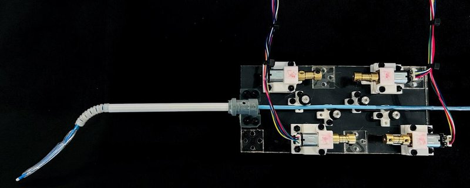

Actuated-tip devices · unlv_tavr_gallage2025
UNLV TAVR robot
UNLV robotic transcatheter delivery system for TAVR: four-tendon omnidirectional bending joint driving a commercial balloon catheter


- Family
- Actuated-tip devices (actuated-device)
- Devices
- own omnidirectional bending joint (8 Nylon 6/6 rings, OD 7 mm, four 0.16 mm superelastic nitinol tendons 90 deg apart at 2.5 mm radius) actuating a commercial Edwards balloon catheter, 3.2 mm diameter, 130 cm (Sec. I, II)
- Degrees of freedom
- tip bending in any direction through one constant-curvature section by paired tendon actuation (4 motors); advance and roll N.R. (Sec. II, Fig. 1)
- Push
- Tip-actuated
- Twist
- Not reported
- Tested up to
- Bench
- Sim-to-real
- None found — No simulation-trained controller found for this robot.
Testing
- Highest level
- Bench
- What was tested
- bench: motion validation of the joint, about 90 deg bend in both directions in the horizontal plane and an omnidirectional bend shown in photos (Sec. II, Fig. 2a-c); no phantom ('future work: patient-specific phantoms', Sec. III); trial counts N.R.
- Key numbers
- maximum bending angle about 90 deg (Sec. II, III); joint OD 7 mm; actuation unit 183 x 80 x 38 mm; no accuracy, repeatability or time numbers
Mechanism
- Push (translation)
- tendon/tip-actuation: four Pololu DC gear motors with pulleys pull the tendons, opposing tendons pull and release equal lengths (Sec. II, Fig. 1); catheter advance N.R.
- Twist (rotation)
- N.R. (bending plane set by the tendon pairs; no roll axis described)
- Device range
- joint OD 7 mm; balloon catheter 3.2 mm x 130 cm (Sec. I)
- Target anatomy
- transcatheter aortic valve replacement (TAVR), 'optimal commissural and coronary alignment' for aortic stenosis (Abstract; Sec. I); no phantom or vessel used
Sensing and interface
- Force sensing
- N.R.
- Leader and haptics
- N.R.
- Imaging
- N.R.
- Sterility
- N.R.
Size
- Footprint (mm)
- actuation system 183 x 80 x 38 mm (Sec. II, Fig. 1)
- Mass (kg)
- N.R.
Simulation
- Simulation model
- none found (hysteresis and kinematic modelling are future work, Sec. III)
- Sim-trained controller
- none found
Versions
- Lineage
- single version (gallage2025_design, arXiv 2506.12082v1, 9 Jun 2025, one-page-body short paper); 'an advancement over' the two-tendon mitral-valve delivery design of Nayar, Qi and Desai 2022 (ref. [3], Sec. I; Georgia Tech, catalogue row gatech_tmvr_qi2023)
Sources
- Design and Development of a Robotic Transcatheter Delivery System for Aortic Valve Replacement · arXiv, 2025 · doi:10.48550/ARXIV.2506.12082 [gallage2025_design]
Notes
- Notes
- REV4 2026-11-23: included after the full assessment of the 19 candidates (REV4_19_candidates.md §7). Extremely short evidence base: a one-page arXiv short paper with a motion test and no vessel model; the row's phantom-free bench label is the paper's own 'preliminary experimental results'. Shares the TAVR-delivery theme of gatech_tmvr_qi2023 (same last author), a new institution and a different robot.
This record
- Read level
- full — full (the whole paper is one page of text; abstract level in the earlier REV4 §4)
- Picture
- gallage2025_design Fig. 1 (bending joint with its actuation system, top view) ↗ — licence: arXiv.org perpetual non-exclusive licence (author photo; publisher copyright terms apply); grade A
- Picture changes
- native extract (1321x661); cropped to the device on its black background; not upscaled
- Found by
- actuated-tip: Search of actuated-tip and magnetic devices.
- Data
- JSON · YAML:
records/robots/unlv_tavr_gallage2025.yaml - Correction
- Suggest a correction [repository not created yet]